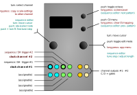

Sequins

Sequins is a basic, dual-channel sequencer. The app provides four 16-step sequences per channel, and CV-control over various channel parameters, including scale mask, octave, pulsewidth, clock multiplication and division. The four sequences can be chained in various ways, providing sequences from 4 to up to 64 notes. The sequence data is stored along with the other settings (whenever settings are saved).
- the sequence editor works similarly to the scale editor in the quantizer modes:
- in the main menu, select which sequence to edit by adjusting the
sequence #parameter. - then right-click on the item displayed right below (
--> edit) to open the sequence-editor. - mute/unmute notes by clicking the left encoder: the step value is displayed in a format x+y.yy, where x is the octave (above or below 0.00V) and y.yy gives the semitone offset. for instance
+2+2.23= 2.23 semitones above octave #2 (=~ 2.000V). - adjust the sequence length by pointing the cursor to the far right, then turn the right encoder.
- (simultaneously push down the left encoder to also mute/clear the steps that are being added while expanding the sequence).
- to adjust the pitch, simply move the cursor to a given slot, then turn the right encoder: this will increase or decrease the pitch in semitones (= step size:
1.00). note these values are pre-quantization, so the effect this has will depend on the chosen scale. - to fine-tune the pitch (= step size: ~
0.01), hold down the left encoder while turning the right encoder. - note: the number displayed when adjusting the note values is the actual (pre-quantization) DAC code (that’s far from ideal, i know …). details on what those numbers mean can be found here.
- in the sequence-editor, you can use the up/down buttons to select which sequence to edit (
#1-#4). (this makes it possible to edit sequences ‘offline’, ie make adjustments to, say, sequence #2 while sequence #1 is playing). - copy+paste: in the sequence-editor, long-press the left encoder to copy the selected sequence. select a different sequence slot, then long-press the down button to paste it into that slot. copy+paste works across channels. (note: once copied (or pasted), sequence data will be stored in a temporary buffer for about 15 seconds, after which it’ll expire.)
- in the main menu, select which sequence to edit by adjusting the
-
the
playmodeanddirectionsettings offer various ways of moving through the sequence(s):-(default): advance by trigger, using the chosen sequence and direction settings.SEQ+1 - SEQ+3: ditto, but cycling through 2, 3, or 4 adjacent sequences (= allows up to 64 notes).TR+1 - TR+3: ditto, but jumps to the next sequence only if/when a trigger is received at the aux. trigger inputs.ARP: arpeggiate the sequence.S+H#1 - S+H#4: CV-address, when triggered (sample and hold).CV#1 - CV#4: CV-address, free-running.
-
note: when in CV-address mode, the
CV adr. rangesetting adjusts the resolution of the chosen input (CV1-CV4), relative to the length of the sequence (ie, you’ll either need5Vor10Vto move through the entire span of the sequence). - the secondary/aux. clock inputs (TR2, TR4) can be used to either cycle through the sequences (see above), or they can be selected as a reset/mute signal (
reset/mute). the options are:RST2,RST4(reset) and=HI2,=LO2,=HI4, and=LO4(mute when aux. clock goes high, respectively low.). NB: When using a clock divider or the like (or anything that will introduce latency relative to the main clock inputs TR1/TR3), it can/will make sense to increase the trigger-to-processing latency (see theTrigger delaysetting). This will make sure the auxiliary trigger (or control voltage) is processed within the current update window. (Also see Quantermain above for an extended discussion of the trigger delay setting).
Inputs and outputs
| I/O | Function | - |
|---|---|---|
| TR1 | clock input #1 | - |
| TR2 | aux clock input #1 / reset/mute #1 | - |
| TR3 | clock input #2 | - |
| TR4 | aux clock input #2 / reset/mute #2 | - |
| CV1 | (mappable) | - |
| CV2 | (mappable) | - |
| CV3 | (mappable) | - |
| CV4 | (mappable) | - |
| A, B | CV outputs #1, #2 | - |
| C, D | aux outputs #1, #2 (default to gate output) | - |
Available settings (per-channel)
| Setting | Meaning |
|---|---|
scale |
current scale |
--> edit |
edit scale mask (for details see here) |
sequence # |
select sequence #1 - #4 |
--> edit |
edit sequence |
playmode |
chain sequences (SEQ+x), advance by trigger (TR+x), or CV-address |
direction |
forward, reverse, pendulum1, pendulum2 (repeat first/last), random, Brownian |
-->brown prob |
(if direction=brwn (Brownian)) probability (p) that sequence direction (up or down will reverse on the next step, 0 means p=0, 255 means p=1) |
mult/div |
set clock multiplier / divider |
octave |
offset octave |
aux. mode |
aux channel output: gate (see note below), copy, AD, ADR, ADSR (the last three are envelopes, see below for details) |
CV adr. range |
toggle 5V/10V (in CV address mode) |
--> pw |
(if aux. mode=gate) pulse-width of triggers at C/D outputs |
--> aux +/- |
(if aux. mode=copy) offset at C/D outputs (in octaves) |
--> att dur |
(if aux. mode=AD, ADR or ADSR) duration of the attack segment of the envelope output on the auxillary channels (C or D outputs) |
--> att shape |
(if aux. mode=AD, ADR or ADSR) shape of the attack segment of the envelope output on the auxillary channels (C or D outputs). See the Piqued app for details of envelope segment shapes. |
--> dec dur |
(if aux. mode=AD, ADR or ADSR) duration of the decay segment of the envelope output on the auxillary channels (C or D outputs) |
--> dec shape |
(if aux. mode=AD, ADR or ADSR) shape of the decay segment of the envelope output on the auxillary channels (C or D outputs). See the Piqued app for details of envelope segment shapes. |
--> sus dur |
(if aux. mode=ADSR) duration of the sustain segment of the envelope output on the auxillary channels (C or D outputs) |
--> sus level |
(if aux. mode=ADR or ADSR) level of the sustain segment of the envelope output (for ADSR envelopes), or the level at which the the decay segment transitions into the release segment (for ADR envelopes) on the auxillary channels (C or D outputs). |
--> rel dur |
(if aux. mode=ADR or ADSR) duration of the release segment of the envelope output on the auxillary channels (C or D outputs) |
--> rel shape |
(if aux. mode=ADR or ADSR) shape of the release segment of the envelope output on the auxillary channels (C or D outputs) |
--> loops |
(if aux. mode=AD or ADR or ADSR) sets the number of loops for each envelope output on the auxillary channels (C or D outputs), defaults to 1 (see also the Tip below) |
reset/mute |
select reset/mute source (mute being more like ‘pause’) |
clock src |
choose channel clock source (TR1 or TR3) |
trigger delay |
trigger-to-processing latency (accessed via CV menu): details see Quantermain above |
Note: There is a bug in the v1.3.3 firmware which prevents the gate auxillary output from working unless the mult/div for that channel is set to x2 or above. This bug was fixed in v1.3.3b firmware.
Controls
main menu
| Control | Function |
|---|---|
| Left encoder (turn) | select channel |
| Left encoder (press) | re-sync channels (reset) |
| Left encoder (long press) | copy selected scale to other channel |
| Right encoder (turn) | Navigation mode: move up and down through the menu items. Edit mode: increase or decrease the value being edited |
| Right encoder (press) | Toggle between menu navigation (selection) mode and value editing mode |
| Right encoder (long press) | app selection menu |
| Up button | toggle octave up (parameter menu) |
| Down button | enter CV menu |
| Up button (long press) | invoke screensaver |
| Down button (long press) | toggle sequence-select behaviour (instant update vs. update at end-of-sequence) |
CV menu
- enter the CV menu by pushing the down button:
- use the right encoder to assign CV input channels 1-4 to a channel parameter (currently available parameters are:
transposition(in octaves),scale mask,sequence number(1-4),sequence length,direction,multiplier/divisorandpulsewidth. The quantiser/samplingtrigger delay(see notes forTrigger delayin Quantermain) and theclock src(clock source) can also be specified in this sub-menu, as well as CV input mappings to these envelope parameters:att dur,dec dur,sus lvl,rel durandenv loops. By using CV to controlenv loops, a sort of psuedo-ratchetting effect can be obtained. Other envelope behaviours can also be specified (see the Piqued app for details):att rest,att fall gtanddec/rel reset. - return to the main menu by either pressing the up or down buttons, or by moving the cursor to an empty field and then pressing the right encoder button.
- clear all mappings (per channel) by long-pressing the down button (in CV menu)
- use the right encoder to assign CV input channels 1-4 to a channel parameter (currently available parameters are:
| Control | Function |
|---|---|
| Left encoder (turn) | select channel |
| Left encoder (press) | re-sync channels (reset) |
| Left encoder (long press) | copy selected scale to other channel |
| Right encoder (turn) | Navigation mode: move up and down through the menu items. Edit mode: increase or decrease the value being edited |
| Right encoder (press) | toggle editing mode, if applicable; return to main menu otherwise |
| Right encoder (long press) | app selection menu |
| Up button | return to main menu |
| Down button | return to main menu |
| Up button (long press) | screensaver |
| Down button (long press) | clear CV mappings |
sequence editor
| Control | Function |
|---|---|
| Left encoder (turn) | select step |
| Left encoder (press) | activate/de-active step |
| Right encoder (turn) | 1) adjust pitch in semitones; push left encoder switch while turning to fine-tune. 2) adjust sequence length by pointing the cursor to the far right, then turn; push left encoder switch while turning to also clear the sequence mask (when expanding the pattern) |
| Right encoder (press) | exit editor |
| Up button | go to next sequence (edit ‘offline’) |
| Down button | go to previous sequence (edit ‘offline’) |
| Left encoder (long press) | copy selected pattern |
| Down button long press | paste previously copied sequence |
| Down button and Left encoder long press | clear sequence (including pitch data) |
| Right encoder (long press) | – (app selection menu) |
| Up button (long press) | – (screensaver) |
Tips:
- if identical sequences are set up on both sequencer channels, and the same clock input is used to drive both channels, then Steve Reich “Piano Phase” type effcts can be acheived by setting the
mult/divsetting for one channel to, say,/32(divide by 32), and to/31on the other channel, and then using a fast clock. The two sequences will slowly move out of phase. By varying the division up and done in one channel, the two sequences can be moved in and out of phase as required. - If you set the
aux. modeto one of the envelope types (as an alternative to just gate or trigger out), then an additional setting--> loopswill appear in the menu. This setting defaults to 1, but you can increase that, and then each time the envelope triggers, it will loop that set number of times. Tthat gives you a fixed ratchet-like effect, which might be useful in some circumstances.- However, in the CV assignment menu (see above), you can assign an input CV to the loops parameter using the
env loops ->setting. If you do that, and also set--> loopsto 1 in the main menu and you can then use an external voltage (which could be a gate signal, suitably attenuated) to vary the number of loops for each new step in the sequence between 1 and 127 (usually you would want between 1 and 3 or 4). Of course, the voltage to do that can come from the other channel of Sequins, so you can set the number of envelope loops at each step in channel A by a sequence in channel B, clocked from the same source, and cross-patched to one of the CV inputs configured to affect the loops parameter for channel A. Or you can use external voltages, of course, including controllers such as joysticks etc. - You can do something similar in the Piqued app, because there is a Loops parameter for the looping envelope types, and you can put that under external CV control.
- However, in the CV assignment menu (see above), you can assign an input CV to the loops parameter using the